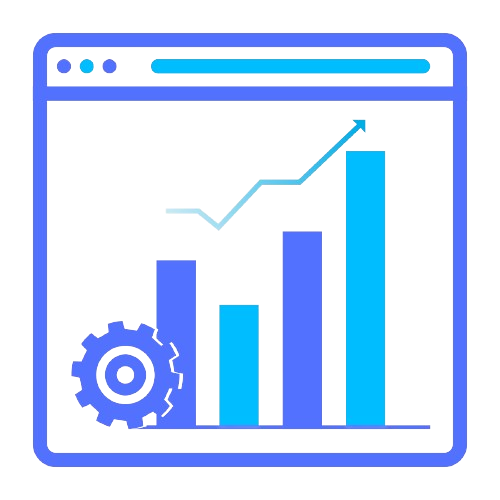

Automate business processes involving people from different departments of the company and be able to measure performance over time. BMP combines techniques to improve your business processes, automating the processes.

Business Process Management

Automate Processes

Modernization
Sustainable Delivery

Increase team productivity